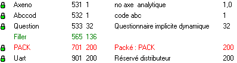
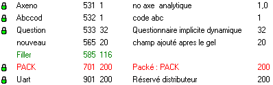
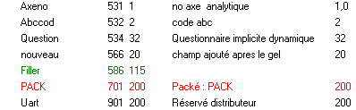
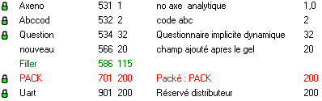

Geler un dictionnaire consiste à interdire toute modification qui provoquerait le décalage d'un champ existant.
Le gel d'un dictionnaire est comparable à une photo du dictionnaire prise à un instant T. Tous les champs du dictionnaire qui étaient présents lors de la photo (instant T) ne peuvent plus être décalés. Par contre, les champs qui ont été ajoutés après l'instant T pourront être librement modifiés et décalés.
Le gel du dictionnaire est donc une protection pour éviter de décaler des champs par inadvertance.
Définitions
Geler un dictionnaire consiste à figer la position de tous les champs dans les tables (sauf pour les tables mémoire). Ensuite, toute modification entraînant un décalage est interdite par l’éditeur.
Dégeler un dictionnaire consiste à enlever (provisoirement) le gel du dictionnaire. Toutes les modifications sont alors permises. Par sécurité, il est possible de dégeler uniquement une table.
Regeler un dictionnaire consiste à revenir à l'état précédent l'opération de dégel du dictionnaire. Seuls les champs qui étaient précédemment gelés sont à nouveau gelés.
Quand geler un dictionnaire ?
Lorsque votre application est en exploitation, il est conseillé de geler le (ou les) dictionnaire(s). Ainsi vous ne risquez pas de faire une modification dans un dictionnaire qui entraîne un décalage dans les tables.
Si vous ne gelez pas le dictionnaire, vous risquez de décaler des champs et de devenir incompatible avec les fichiers. Et si vous ne moulinez pas les fichiers, vous allez avoir un mélange d'anciens et de nouveaux enregistrements.
Bien que votre dictionnaire soit gelé, vous pouvez développer des nouvelles fonctionnalités pour votre application, rajouter et modifier de nouveaux champs sans aucun risque d’incompatibilité.
Quand dégeler et regeler un dictionnaire ?
Vous pouvez dégeler un dictionnaire si vous avez une modification importante à faire dans la structure des tables. Une fois le dictionnaire dégelé, toutes les modifications sont autorisées. Il faut être prudent et mesurer l'impact des modifications sur l'ensemble de l'application.
Une fois vos modifications effectuées, regelez le dictionnaire. Seuls les champs qui étaient précédemment gelés repassent à l'état gelé.
Remarques
Les opérations de gel et dégel se font depuis le menu Edition.
L’opération de dégel d’une seule table se fait depuis le menu contextuel (clic droit) de la table. Il est possible de dégeler plusieurs tables en une opération (sélection multiple dans le tableau).
Les tables mémoires ne sont pas concernées par le gel du dictionnaire car elles ne sont jamais écrites dans des fichiers. Une modification d'une table mémoire implique uniquement de recompiler les modules et masques qui l'utilisent (la recompilation se fait automatiquement grâce aux projets).
Lorsqu'un champ est gelé, l'icône du cadenas est affichée.
Exemple
Etape 1 : Le dictionnaire est gelé

Etape 2 : L'ajout du champ "nouveau" est possible car il ne modifie pas les positions des champs existant

Etape 3 : Pour modifier la taille de Abccod il faut dégeler le dictionnaire.

Etape 4 : Le dictionnaire est regelé. Le champ "nouveau" n'est pas verouillé car il a été ajouté après le gel.
